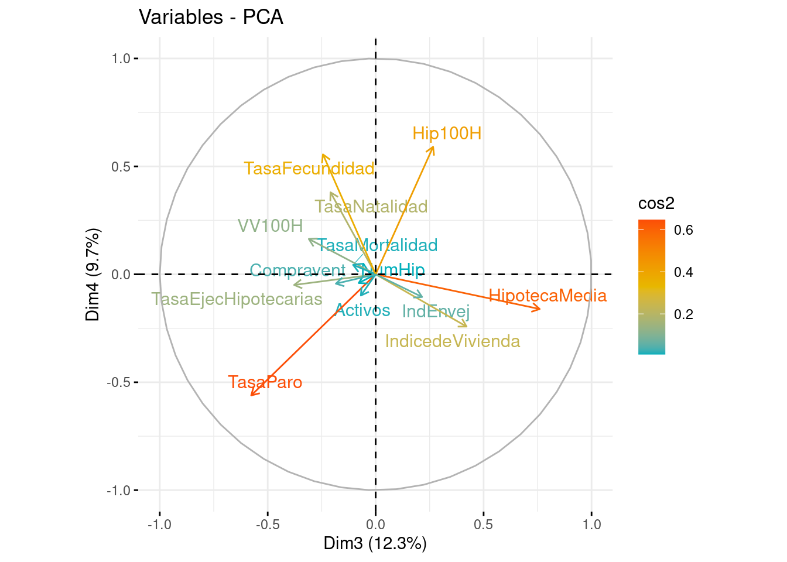
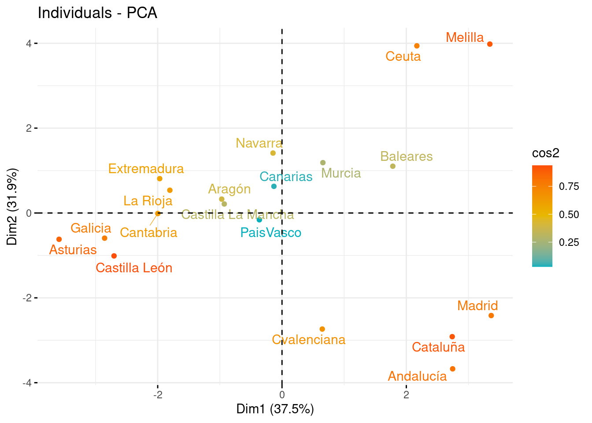
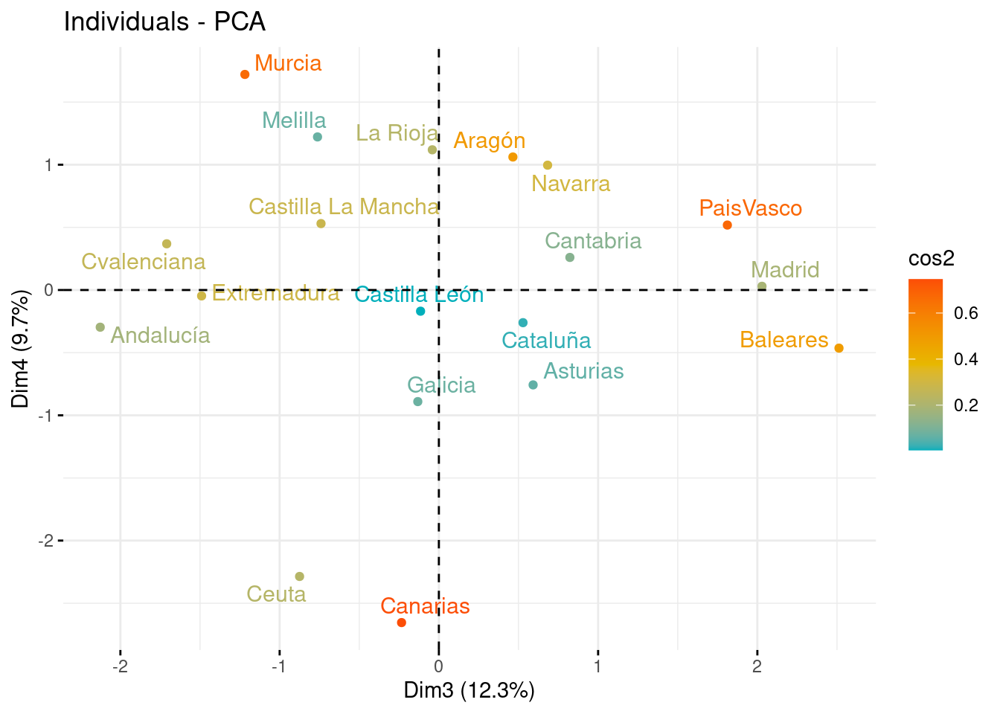

# Librerias
library(readxl) # Para leer los excels
library(dplyr) # Para tratamiento de dataframes
library(ggplot2) # Nice plots
library(factoextra) # fviz_cluster function
library(skimr) # Para funcion skim
library(ggcorrplot) #Para funcion ggcorrplot
library(corrplot) #Para corrplotReducción Dimensionalidad - PCA: MercadoHipotecas
Introducción
dataset
En este cuaderno vamos a analizar el dataset llamado MercadoHipotecas.xlsx. Este dataset presenta los datos de estudio del mercado de adquisición de viviendas en propiedad en todas las comunidades autónomas durante el ejercicio 2021, relacionando las transmisiones inmobiliarias con las hipotecas constituidas, los índices de precio de vivienda y otras variables económicas y sociodemográficas. Orientado a escalamiento multidimensional, técnicas de clusterización y análisis de componentes principales. Nuestro objetivo es aplicar un procedimiento de PCA para conocer que variables independientes son de interés para estudiar el mercado inmobiliario y ver qué comunidades autónomas son las más parecidas y las más diferentes en términos de variables hipotecarias y sociodemográficas. Concretamente en este dataset tenemos las siguientes variables:
- CCAA: Comunidades Autónomas.
- HipotecaMedia: Importe de la hipoteca por cada comunidad autonoma promediadas por su tanaño.
- IndicedeVivienda: Índice del precio de la vivienda (IPV).
- TasaEjecHipotecarias: Número de Hipotecas Ejecutadas.
- Hip100H: Número de hipotecas por cada cien mil habitantes en la comunidad autónoma.
- TasaParo: Tasas de paro por distintos grupos de edad, sexo y comunidad autónoma.
- TasaNatalidad: Tasa Bruta de Natalidad.
- NumHip: Cantidad de hipótecas en la comunidad autónoma.
- VV100H: Número de viviendas vacias por cada cien mil habitantes.
- IndEnvej: Porcentaje de personas mayores a 65 años.
- TasaMortalidad: Porcentaje de fallecidos por comunidad autónoma.
- TasaFecundidad: Tasa Global de Fecundidad por comunidad autónoma, según nacionalidad (española/extranjera) de la madre.
- Activos: Persona mayor de 16 años en búsqueda activa de trabajo .
- Compravent: Número de compraventas por comunidad autónoma.
Si tomamos demasiadas variables es difícil visualizar relaciones entre ellas. Otro problema que se presenta es la fuerte correlación. Se hace necesario, pues, reducir el número de variables sin perder información. Es importante resaltar el hecho de que el concepto de mayor información se relaciona con el de mayor variabilidad o varianza.
Cargamos entonces el conjunto de datos:
datos <- read_excel("../../../../files/MercadoHipotecas.xlsx", sheet = "Datos")Descripción del trabajo a realizar
(Esto irá en la web de explica) Se pretende hacer un Análisis de Reducción de la Dimensionalidad empleando el procedimiento de Componentes Principales. El objetivo es conocer que variables independientes son de interés para estudiar el mercado inmobiliario y ver qué comunidades autónomas son las más parecidas y las más diferentes en términos de variables hipotecarias y sociodemográficas.
- Hacer un análisis exploratorio explorando matriz de correlaciones.
- Ver si es necesario escalar/centrar los datos antes de aplicar pca y decidir si hacerlo con matriz de correlaciones o covarianzas.
- Seleccionar un determinado número de componentes y ver como influyen las variables en estas.
- Interpretar componentes y resultados.
Análisis Exploratorio (EDA1)
En primer lugar, cargamos los datos que vamos a utilizar. En este caso, se trata de un conjunto de datos compuesto por 19 filas y 14 columnas. Las filas corresponden a las 19 Comunidades Autónomas de España y las 14 columnas a variables que se han medido para cada una de ellas.
Antes de comenzar a aplicar la técnica, comprobamos si hay valores perdidos, por si fuera necesario realizar algún preproceso. En este caso, y como vemos a continuación, no hay ningún NA en los datos que vamos a utilizar.
sum(is.na(datos))[1] 0Por otra parte, para tener una noción general que nos permita describir el conjunto con el que vamos a trabajar, podemos extraer su dimensión, el tipo de variables que contiene o qué valores toma cada una.
# Dimensión del conjunto de datos
dim(datos)[1] 19 14# Tipo de variables que contiene
str(datos)tibble [19 × 14] (S3: tbl_df/tbl/data.frame)
$ CCAA : chr [1:19] "Andalucía" "Aragón" "Asturias" "Baleares" ...
$ HipotecaMedia : num [1:19] 125016 124092 104138 249109 137260 ...
$ IndicedeVivienda : num [1:19] 0.952 0.94 0.901 1.09 0.953 ...
$ TasaEjecHipotecarias: num [1:19] 0.2299 0.0195 0.0163 0.0108 0.044 ...
$ Hip100H : num [1:19] 1297 1167 1087 1109 808 ...
$ TasaParo : num [1:19] 21.7 10.2 12.5 14.9 23.2 ...
$ TasaNatalidad : num [1:19] 7.72 7.21 4.74 7.81 5.67 5.63 5.5 7.1 7.52 7.06 ...
$ NumHip : num [1:19] 109869 15475 10994 13013 17547 ...
$ VV100H : num [1:19] 7521 7565 8189 6075 6363 ...
$ IndEnvej : num [1:19] 108 148 231 106 126 ...
$ TasaMortalidad : num [1:19] 9.33 11.06 13.25 7.22 7.63 ...
$ TasaFecundidad : num [1:19] 34.4 34.8 24.7 32.7 23.9 ...
$ Activos : num [1:19] 4023 645 447 649 1121 ...
$ Compravent : num [1:19] 117987 14935 9406 14168 20801 ...# Descripción de las variables
skim(datos)| Name | datos |
| Number of rows | 19 |
| Number of columns | 14 |
| _______________________ | |
| Column type frequency: | |
| character | 1 |
| numeric | 13 |
| ________________________ | |
| Group variables | None |
Variable type: character
| skim_variable | n_missing | complete_rate | min | max | empty | n_unique | whitespace |
|---|---|---|---|---|---|---|---|
| CCAA | 0 | 1 | 5 | 18 | 0 | 19 | 0 |
Variable type: numeric
| skim_variable | n_missing | complete_rate | mean | sd | p0 | p25 | p50 | p75 | p100 | hist |
|---|---|---|---|---|---|---|---|---|---|---|
| HipotecaMedia | 0 | 1 | 133388.65 | 42665.06 | 91787.81 | 105374.29 | 120524.54 | 144500.61 | 249109.28 | ▇▃▂▁▁ |
| IndicedeVivienda | 0 | 1 | 0.96 | 0.09 | 0.82 | 0.90 | 0.94 | 1.01 | 1.12 | ▂▇▂▁▅ |
| TasaEjecHipotecarias | 0 | 1 | 0.05 | 0.07 | 0.00 | 0.01 | 0.02 | 0.05 | 0.23 | ▇▂▁▁▁ |
| Hip100H | 0 | 1 | 1073.97 | 234.29 | 393.93 | 993.02 | 1109.37 | 1231.59 | 1407.47 | ▁▁▂▇▅ |
| TasaParo | 0 | 1 | 14.94 | 4.96 | 9.84 | 11.49 | 12.52 | 17.74 | 26.66 | ▇▃▂▂▁ |
| TasaNatalidad | 0 | 1 | 7.17 | 1.49 | 4.74 | 6.12 | 7.10 | 7.75 | 11.17 | ▇▇▇▂▁ |
| NumHip | 0 | 1 | 29379.47 | 33716.23 | 329.00 | 8910.00 | 17126.00 | 26166.00 | 109869.00 | ▇▂▁▁▂ |
| VV100H | 0 | 1 | 7214.38 | 3019.69 | 1584.73 | 5568.22 | 7565.40 | 9907.24 | 11177.44 | ▂▃▃▇▇ |
| IndEnvej | 0 | 1 | 134.11 | 46.60 | 46.23 | 110.60 | 126.11 | 153.13 | 231.07 | ▂▆▇▂▃ |
| TasaMortalidad | 0 | 1 | 9.72 | 1.89 | 6.76 | 8.25 | 9.83 | 10.93 | 13.25 | ▆▇▆▅▅ |
| TasaFecundidad | 0 | 1 | 32.89 | 5.33 | 23.90 | 30.72 | 32.91 | 34.61 | 47.19 | ▃▇▅▁▁ |
| Activos | 0 | 1 | 1221.23 | 1283.45 | 36.30 | 381.95 | 748.30 | 1174.60 | 4022.90 | ▇▃▁▁▂ |
| Compravent | 0 | 1 | 29815.00 | 34610.46 | 308.00 | 8529.50 | 19785.00 | 24230.50 | 117987.00 | ▇▁▁▂▁ |
Vemos que estas variables (a excepción de las CCAA) son todas de tipo numérico, y además, podemos obtener información como la media, desviación típica, los cuartiles y el histograma de cada una.
Correlación: El que existan correlaciones muy elevadas en el conjunto de datos nos permitirá resumir la información en un menor número de componentes principales, pues éstas explicarán una mayor cantidad de información.
ggcorrplot(cor(datos[,2:14]), type = "lower", lab = T, show.legend = T)En este caso, se ha generado un gráfico entre variables, sin tener en cuenta la correlación de la variable consigo misma, pues siempre será del 100%.
En términos absolutos, vemos que hay varias correlaciones moderadas/altas como entre las variables Activos y Compravent (del 98%) o entre IndEnvej y TasaMortalidad (del 74%). En ambos casos, la correlación es positiva, es decir, que crecen proporcionalmente. Respecto a la correlación negativa, encontramos valores muy altos para TasaNatalidad e IndEnvej. Las correlaciones más bajas corresponden a los pares TasaNatalidad y Compravent (2%) o HipotecaMedia y TasaFecundidad (-1%).
En resumen, vemos que hay varias variables con una alta correlación absoluta(tanto postivia como negativa), luego esto nos va a permitir resumir la información en un núemro de componentes principales menor al número de variables que aquí tenemos.
Reducción Dimensionalidad: Componentes Principales
Introducción
El Análisis de Componentes Principales (PCA) es una técnica para reducir la complejidad de conjuntos de datos con múltiples variables. Su objetivo es transformar variables correlacionadas en un conjunto menor de dimensiones sin perder la mayor parte de la información original.
Se busca encontrar nuevas variables (componentes) que estén incorrelacionadas y que capturen la máxima variabilidad de los datos. Esto se logra mediante combinaciones lineales de las variables originales. PCA es útil para entender relaciones, reducir dimensiones y manejar la alta correlación entre variables.
Para aplicar PCA, se necesitan datos cuantitativos y es crucial escalar las variables (estandarizar = media cero y varianza uno). Esto garantiza que ninguna variable domine el análisis. Además, se puede trabajar con la matriz de correlaciones para abordar fuertes correlaciones entre variables, manteniendo así la información más relevante del conjunto de datos.
Los pasos generales son:
Estandarización de las variables: Es importante estandarizar las variables numéricas para que tengan media cero y desviación estándar uno. Esto es crucial para que ninguna variable domine el análisis debido a su escala.
Cálculo de la matriz de correlaciones o covarianzas: Dependiendo del enfoque, se puede trabajar con la matriz de correlaciones si se busca abordar fuertes correlaciones entre variables, o con la matriz de covarianzas si se busca la varianza total de las variables.
- NOTA: Aconsejable trabajar siempre con la matriz de correlaciones (a no ser que todas variables estén en las mismas unidades, que se podrá usar la matriz de covarianzas). De no seguir esta nota y usar la matriz de covarianzas, las variables que tienen mayores unidades dominarán la estructura de covarianza, lo que llevará a una representación inexacta de la variabilidad real de los datos.
Descomposición de la matriz: Se descompone la matriz de correlaciones en sus vectores y valores propios. Los valores propios representan la cantidad de varianza explicada por cada componente principal, mientras que los vectores propios (autovectores) determinan la dirección de cada componente en el espacio multidimensional original.
Selección de componentes: Los componentes se ordenan de manera descendente según la cantidad de varianza que explican. Los primeros componentes capturan la mayor variabilidad de los datos y se seleccionan para reducir la dimensionalidad manteniendo la información más relevante.
Transformación de datos: Proyectar los datos originales en el espacio de los componentes principales para obtener las nuevas variables. Estas son combinaciones lineales de las variables originales y son ortogonales entre sí. Esta transformación lineal conserva la mayor parte de la información en un espacio de menor dimensión, lo que facilita el análisis y la visualización de los datos.
Interpretación y visualización: Explorar la importancia de cada componente en términos de la variabilidad explicada. Se pueden interpretar los componentes para comprender qué aspectos de los datos capturan. Si es posible, representar gráficamente los datos en el espacio reducido de los componentes principales para obtener una mejor comprensión de las relaciones entre las observaciones.
Modelo
En las siguientes lineas haremos que la variable CCAA se ponga como nombre de filas y posteriormente eliminaremos esa variable ya que ya la tendremos como nombre de filas.
CCAA<-datos$CCAA
datos<-datos[,-1] # Eliminamos ahora
rownames(datos)<-CCAA # Como nombres de filas las CCAAEscalamos los datos y calculamos la matriz de varianzas covarianzas, mostramos solo la diagonal (debería ser 1).
datos2<-scale(datos)
summary(datos2) HipotecaMedia IndicedeVivienda TasaEjecHipotecarias Hip100H
Min. :-0.9751 Min. :-1.5436 Min. :-0.71140 Min. :-2.9025
1st Qu.:-0.6566 1st Qu.:-0.6068 1st Qu.:-0.58520 1st Qu.:-0.3455
Median :-0.3015 Median :-0.1983 Median :-0.44917 Median : 0.1511
Mean : 0.0000 Mean : 0.0000 Mean : 0.00000 Mean : 0.0000
3rd Qu.: 0.2604 3rd Qu.: 0.5942 3rd Qu.:-0.05025 3rd Qu.: 0.6728
Max. : 2.7123 Max. : 1.8782 Max. : 2.40454 Max. : 1.4235
TasaParo TasaNatalidad NumHip VV100H
Min. :-1.0305 Min. :-1.62684 Min. :-0.86162 Min. :-1.8643
1st Qu.:-0.6963 1st Qu.:-0.70550 1st Qu.:-0.60711 1st Qu.:-0.5451
Median :-0.4903 Median :-0.04549 Median :-0.36343 Median : 0.1162
Mean : 0.0000 Mean : 0.00000 Mean : 0.00000 Mean : 0.0000
3rd Qu.: 0.5640 3rd Qu.: 0.39005 3rd Qu.:-0.09531 3rd Qu.: 0.8918
Max. : 2.3643 Max. : 2.68165 Max. : 2.38726 Max. : 1.3124
IndEnvej TasaMortalidad TasaFecundidad Activos
Min. :-1.8856 Min. :-1.5718 Min. :-1.687729 Min. :-0.92324
1st Qu.:-0.5044 1st Qu.:-0.7817 1st Qu.:-0.408172 1st Qu.:-0.65392
Median :-0.1716 Median : 0.0561 Median : 0.003953 Median :-0.36848
Mean : 0.0000 Mean : 0.0000 Mean : 0.000000 Mean : 0.00000
3rd Qu.: 0.4082 3rd Qu.: 0.6394 3rd Qu.: 0.324077 3rd Qu.:-0.03633
Max. : 2.0806 Max. : 1.8696 Max. : 2.685109 Max. : 2.18293
Compravent
Min. :-0.8525
1st Qu.:-0.6150
Median :-0.2898
Mean : 0.0000
3rd Qu.:-0.1614
Max. : 2.5476 diag(var(datos2)) HipotecaMedia IndicedeVivienda TasaEjecHipotecarias
1 1 1
Hip100H TasaParo TasaNatalidad
1 1 1
NumHip VV100H IndEnvej
1 1 1
TasaMortalidad TasaFecundidad Activos
1 1 1
Compravent
1 Aplicamos funcion PCA, notar que en este caso no haría falta los argumentos SCALE=TRUE y CENTER=TRUE puesto que ya hemos escalado dos datos en un paso previo. Por defecto en la función viene el valor de SCALE=FALSE y CENTER=TRUE.
pca <- prcomp(datos2,center= TRUE,scale = TRUE) # Scale=T Calculamos los coeficientes de la ecuación para cada componente principal
pca$rotation PC1 PC2 PC3 PC4
HipotecaMedia 0.23447260 -0.06310254 0.60036701 -0.14352759
IndicedeVivienda 0.35056462 0.03492200 0.33265184 -0.21595433
TasaEjecHipotecarias 0.18895585 -0.38696171 -0.29859399 -0.04395518
Hip100H 0.02384814 -0.32139415 0.21029632 0.52700520
TasaParo 0.17638635 0.16978548 -0.45544384 -0.50048376
TasaNatalidad 0.34697038 0.22377034 -0.16525154 0.33885102
NumHip 0.23253409 -0.41264772 -0.06210480 -0.03592632
VV100H -0.31862705 -0.19954134 -0.24466170 0.14612450
IndEnvej -0.38398575 -0.20108861 0.16993058 -0.09362279
TasaMortalidad -0.39081025 -0.14283197 -0.08256307 0.03905432
TasaFecundidad 0.27908332 0.21917010 -0.19293982 0.49563579
Activos 0.22264109 -0.41490535 -0.05417093 -0.08779747
Compravent 0.22610583 -0.41442757 -0.14564495 -0.03868128
PC5 PC6 PC7 PC8
HipotecaMedia 0.22721287 0.25793850 0.52980535 0.30139664
IndicedeVivienda -0.29883955 0.25484457 -0.69422079 0.26266824
TasaEjecHipotecarias -0.04578494 0.09016705 -0.14237630 -0.14450223
Hip100H 0.38422611 -0.46625149 -0.28074363 0.33169721
TasaParo 0.26991529 -0.24907203 0.02930616 0.52896695
TasaNatalidad -0.10947984 0.16047629 0.05441172 0.12043767
NumHip -0.11719298 -0.06702702 0.13681214 0.03619294
VV100H 0.39357805 0.72591201 -0.13624112 0.21415518
IndEnvej -0.29873692 -0.04475899 -0.01138938 0.04181744
TasaMortalidad -0.51193330 -0.04229536 0.15474088 0.56363472
TasaFecundidad -0.29559220 0.11660486 0.20014738 0.16672803
Activos -0.12111322 0.07773141 0.16598060 -0.14274555
Compravent -0.05002690 -0.01843676 0.07412227 0.01306008
PC9 PC10 PC11 PC12
HipotecaMedia -0.262791756 0.0251241391 -0.01163925 -0.0004333459
IndicedeVivienda 0.070224200 -0.0399012682 0.01986345 -0.0797306119
TasaEjecHipotecarias -0.775723474 -0.0024548350 -0.13676702 0.0096868413
Hip100H -0.009941869 0.0447484933 -0.12820466 -0.0421913182
TasaParo 0.030071820 0.2166825934 -0.06628922 -0.1170645772
TasaNatalidad 0.036325847 0.3089459905 -0.21757169 0.6953808523
NumHip 0.366200530 -0.0152004504 0.42093030 0.1793240415
VV100H 0.153187336 0.0443334585 0.05124612 -0.0468669300
IndEnvej -0.054795835 0.8212580823 0.03498288 -0.0514083908
TasaMortalidad -0.085630316 -0.4010667812 -0.13596976 0.1584267923
TasaFecundidad -0.050617589 0.1249734888 0.15590775 -0.6136362733
Activos 0.389029556 0.0153261020 -0.69630375 -0.2279291148
Compravent 0.011356353 0.0002626747 0.45158656 0.0625588127
PC13
HipotecaMedia 0.0219537496
IndicedeVivienda -0.0113296319
TasaEjecHipotecarias 0.2270146192
Hip100H -0.0002262752
TasaParo 0.0252507795
TasaNatalidad -0.0674299774
NumHip 0.6233573899
VV100H 0.0302959223
IndEnvej 0.0041371857
TasaMortalidad -0.0354555546
TasaFecundidad 0.0577103822
Activos -0.1031295200
Compravent -0.7334418197Podemos observar aquí nuestras variables en el nuevo sistema de cordenadas (las componentes principales), dando lugar a ecuaciones de cada eje como combinación lineal del total de variables. Analizar el vector que crea cada componente y cuáles son los pesos que tienen las variables en cada componente, ayuda a interpretar qué tipo de información recoge cada una de ellas.
Por ejemplo, la primera componente principal (PC1), presenta la siguiente ecuación, como combinación lineal de las siete variables originales:
$ PC_1 = 0.23 {HipotecaMedia} + 0.35 {IndicedeVivienda} + 0.18TasaEjecHipotecarias + 0.023 Hip100H + 0.17 TasaParo + 0.34 TasaNatalidad + 0.23 NumHip -0.31VV100H -0.38IndEnvej -0.39TasaMortalidad +0.27TasaFecundidad + 0.22Activos +0.22Compravent$
Extraemos las nuevas coordenadas de los individuos (puntuaciones)
Además, podemos ver las puntuaciones, que son las coordenadas de cada observación original (Comunidad Autónoma) sobre los nuevos ejes construidos (componentes principales). Esto corresponde a un cambio de coordenadas bajo el paradigma del Álgebra Lineal.
pca$x PC1 PC2 PC3 PC4 PC5
Andalucía 2.7455023 -3.67317229 -2.12660745 -0.29682024 0.110706075
Aragón -0.9699327 0.32725095 0.46486382 1.06149710 -0.472663618
Asturias -3.5869740 -0.61984654 0.59178552 -0.75737644 -0.703643431
Baleares 1.7825614 1.10268112 2.51261640 -0.46389719 1.035908384
Canarias -0.1301632 0.62843489 -0.23431304 -2.65430954 1.230373539
Cantabria -1.9979724 -0.01197302 0.82267569 0.26001624 0.450369088
Castilla León -2.7026848 -1.01136738 -0.11497356 -0.16914178 -0.536890298
Castilla La Mancha -0.9290027 0.21256139 -0.74011673 0.53011163 0.848851231
Cataluña 2.7389745 -2.91486340 0.52836881 -0.26063991 -0.837474574
Cvalenciana 0.6478324 -2.73565870 -1.70915179 0.36886681 0.314182432
Extremadura -1.9681281 0.80998146 -1.49001512 -0.04715111 0.276129920
Galicia -2.8544978 -0.59320383 -0.13237242 -0.89058464 -0.786696609
Madrid 3.3662356 -2.41685601 2.02910270 0.02964115 -0.009936487
Murcia 0.6578774 1.18636724 -1.21821799 1.72054150 0.373052356
Navarra -0.1447226 1.41272907 0.68283945 0.99630793 0.118156816
PaisVasco -0.3644187 -0.15990677 1.81164513 0.51836980 -0.407434600
La Rioja -1.8046126 0.53640665 -0.04130292 1.11905222 0.441014002
Ceuta 2.1698869 3.93962047 -0.87475999 -2.28618673 -0.795605090
Melilla 3.3442391 3.98081471 -0.76206651 1.22170320 -0.648399135
PC6 PC7 PC8 PC9 PC10
Andalucía -0.464167091 0.27301087 0.39570536 0.03036640 0.10008293
Aragón 0.000578174 -0.05973468 0.11517510 -0.04716968 -0.17316784
Asturias -0.667474209 -0.26393758 0.26901900 -0.14543133 0.18368390
Baleares 0.863799139 0.07742047 0.58825882 -0.41385644 0.15314700
Canarias -0.366682515 -0.15143184 -0.55567081 0.07533031 0.09050859
Cantabria -0.657556125 -0.93524427 -0.13942883 0.05217030 -0.13731336
Castilla León 0.432311346 -0.07605104 0.01978793 0.02206576 0.14977190
Castilla La Mancha 0.104829825 0.59710033 0.01973866 0.32991103 -0.18684983
Cataluña 0.570424085 0.03427750 -0.30040647 -0.10886475 -0.19763763
Cvalenciana 0.076833291 -0.42483946 -0.13046479 -0.67979305 -0.02854897
Extremadura -0.127527331 0.63183605 0.55695797 0.18377774 0.01817693
Galicia 0.974657578 0.15586395 -0.28482319 0.23684134 0.15868031
Madrid -0.201133176 -0.16638968 0.00496925 0.68770653 0.05211501
Murcia 0.284400425 -0.17269157 -0.35486145 0.14631769 0.08309741
Navarra -0.145413390 0.82387546 -0.70187692 -0.27220149 0.05649532
PaisVasco -0.941793203 0.63362573 0.04668404 -0.22152370 -0.09684373
La Rioja 0.492628649 -0.52220202 0.26539476 0.12958325 -0.21612799
Ceuta 0.047827143 -0.03390410 0.13400159 -0.05399996 -0.29299263
Melilla -0.276542616 -0.42058411 0.05183999 0.04877006 0.28372268
PC11 PC12 PC13
Andalucía 0.073488769 -0.0079224783 -0.029748511
Aragón -0.011186846 -0.0039848793 -0.025819489
Asturias -0.037865075 0.0905049079 -0.004029230
Baleares 0.002150701 0.0066804364 -0.010156402
Canarias -0.075883351 -0.0244823013 -0.001124104
Cantabria 0.020726590 -0.0290358175 -0.015005169
Castilla León 0.069655256 -0.1046768332 0.010952963
Castilla La Mancha -0.007564225 0.0149590302 -0.033822596
Cataluña -0.166811234 -0.0099003952 -0.002594989
Cvalenciana 0.037928332 0.0171151462 0.023516428
Extremadura -0.098492637 -0.0145216149 0.038712801
Galicia 0.027262055 0.0230609545 -0.015291536
Madrid 0.068182987 0.0235482170 0.028696809
Murcia -0.025861394 0.0501499420 0.013033339
Navarra 0.092609193 0.0121100316 0.005740842
PaisVasco -0.022083454 -0.0305590536 0.007893858
La Rioja 0.019684769 0.0004476988 0.013228807
Ceuta 0.092598574 0.0187605584 0.009238707
Melilla -0.058539011 -0.0322535498 -0.013422528Varianza explicada por cada componente principal
Una vez calculadas las componentes principales, es de interés conocer la varianza explicada por cada una, ya que el principal objetivo que se sigue con PCA es maximizar la cantidad de información explicada por las componentes.
summary(pca)Importance of components:
PC1 PC2 PC3 PC4 PC5 PC6 PC7
Standard deviation 2.2074 2.0355 1.2656 1.12100 0.64943 0.5175 0.44767
Proportion of Variance 0.3748 0.3187 0.1232 0.09667 0.03244 0.0206 0.01542
Cumulative Proportion 0.3748 0.6935 0.8167 0.91340 0.94584 0.9664 0.98186
PC8 PC9 PC10 PC11 PC12 PC13
Standard deviation 0.34381 0.29028 0.16368 0.06853 0.03917 0.01970
Proportion of Variance 0.00909 0.00648 0.00206 0.00036 0.00012 0.00003
Cumulative Proportion 0.99095 0.99743 0.99949 0.99985 0.99997 1.00000Standard deviation: muestra las desviaciones estándar de cada componente principal. Si elevamos al cuadrado estas desviaciones, tenemos la varianza (el autovalor correspondiente). Es decir, la varianza explicada por cada componente corresponde con los autovalores de la matriz de covarianzas de los datos estandarizados.
Proportion of Variance: es la proporción de la varianza total que explica cada componente principal y quizá, es la fila más importante de nuestros resultados. Como los autovalores están ordenados de mayor a menor y así son construidas las componentes principales, la primera componente principal es la que mayor porcentaje de variabilidad explica, un 37%. Así, la varianza explicada por la componentes van en orden decreciente, teniendo que la segunda componente explica un 31% y la tercera, un 12%.
Cumulative proportion: es la varianza acumulada y se calcula progresivamente sumando la Proportion of Variance anterior. En vista de estos resultados, vemos que la primera componente agrupa el 37% de la variación, y que necesitamos 3 componentes para alcanzar el 80%.
Selección de componentes
Graficando el valor de la varianza de cada componente principal, podemos observar los resultados comentados anteriormente, que las primeras componentes son las que más varianza explican y que a medida que se añaden más, la varianza explicada por cada una es menor.
fviz_eig(pca, main="Varianza de cada componente", choice = "eigenvalue", addlabels = T)
o como el porcentaje de varianza explicada por cada componente sobre el total.
fviz_screeplot(pca, addlabels = TRUE, main="Porcentaje de varianza explicada por cada componente (%)")A continuación, representamos las varianzas acumuladas:
plot(summary(pca)$importance[3, ], type="o", col="darkblue", lwd=3, main = "Porcentaje de varianza acumulada", xlab = "Componente Principal", ylab = "Porcentaje de varianza acumulada")Determinar el número de componentes que elegir para continuar con el análisis no tiene unas normas determinadas a seguir. Respecto a ello, existen varios criterios con sus respectivas propuestas.
Una opción para determinar el número de componentes principales que seleccionar, es coger aquellas tal que expliquemos un % determinado de la variabilidad de los datos que nosotros prefijemos. Generalmente se pone como umbral mínimo un 80%, entonces necesitaríamos elegir 3 componentes.
Otra posibilidad es seguir el criterio de Kaisser, que escoge aquellas componentes cuyo autovalor sea superior a 1 (cuando las variables han sido generadas a partir de la matriz de correlaciones). Según este criterio y mirando el gráfico anterior de la varianza (igual a eigenvalues), eligiríamos las cuatro primeras componentes. Este criterio, cuando p < 20, tiende a ser estricto e incluir pocas componentes.
Para relajar el criterio de Kaisser, existe la modificación de Jollife, que elige aquellas componentes cuyo autovalor sea superior a 0.7. Esta modificación, nos permite elegir igualmente 4 componentes.
En este caso, nos podríamos quedar con las 4 primeras componentes principales, ya que es el número en el que coincide el mayor número de criterios. Por tanto, en lugar de trabajar con las 13 variables originales, trabajaremos con 4 variables nuevas, que son combinaciones de ellas.
Interpretación
Hemos decidido quedarnos con 4 componentes principales, que explican el 91% de la variabilidad total. Para realizar su interpretación, volvemos a ver los coeficientes de las ecuaciones de los componentes, observando cuáles son los valores más altos (en valor absoluto), para así poder dar una interpretación a cada eje.
# Autovectores de las primeras 3 componentes
cov(pca$rotation [,1:4]) PC1 PC2 PC3 PC4
PC1 0.074284136 0.014541400 0.0029560973 -0.0029453827
PC2 0.014541400 0.059966364 -0.0047502326 0.0047330151
PC3 0.002956097 -0.004750233 0.0823676664 0.0009621668
PC4 -0.002945383 0.004733015 0.0009621668 0.0823746540Gráficamente, también podemos ver la contribución de las variables a los 3 primeros ejes, señalando en color azul las variables que puntúan positivamente en el eje, y en rojo, las que lo hacen de forma negativa.
pca$rotation[,1:4] PC1 PC2 PC3 PC4
HipotecaMedia 0.23447260 -0.06310254 0.60036701 -0.14352759
IndicedeVivienda 0.35056462 0.03492200 0.33265184 -0.21595433
TasaEjecHipotecarias 0.18895585 -0.38696171 -0.29859399 -0.04395518
Hip100H 0.02384814 -0.32139415 0.21029632 0.52700520
TasaParo 0.17638635 0.16978548 -0.45544384 -0.50048376
TasaNatalidad 0.34697038 0.22377034 -0.16525154 0.33885102
NumHip 0.23253409 -0.41264772 -0.06210480 -0.03592632
VV100H -0.31862705 -0.19954134 -0.24466170 0.14612450
IndEnvej -0.38398575 -0.20108861 0.16993058 -0.09362279
TasaMortalidad -0.39081025 -0.14283197 -0.08256307 0.03905432
TasaFecundidad 0.27908332 0.21917010 -0.19293982 0.49563579
Activos 0.22264109 -0.41490535 -0.05417093 -0.08779747
Compravent 0.22610583 -0.41442757 -0.14564495 -0.03868128Si nos fijamos en los pesos más altos, podemos darle una interpretación a cada eje. Por ejemplo:
La primera componente explica un 40% de la variación. Hay valores absolutos bastante similares y elevados, que son los correspondientes con las variables Ind_envej, T_mort, T_nat y Tasa_enf. Por lo tanto, parece que la primera componente recoge información demográfica. Teniendo en cuenta los signos podemos concluir que las CC.AA. que se sitúen a la derecha del eje serán aquellas con mayor Tasa de mortalidad, mayor Índice de envejecimiento, mayor Tasa de incidencia de enfermedades en la población, y en contraposición, menor Tasa de natalidad.
En la segunda componente, los pesos más elevados corresponden con las variables Médicos y Enfermeros, representando de alguna forma, los recursos sanitarios de las CCAA. Ambas variables contribuyen de forma positiva al eje, por lo que cuanto más a la derecha del eje se sitúe una CC.AA., mayores recursos de personal sanitario posee.
Para la tercera componente, el peso más elevado y con gran diferencia sobre el resto, corresponde a la variable medidora de la inaccesibilidad de la población a los medicamentos recetados. La variable puntúa negativamente en el eje, de forma que las Comunidades con mayor valor en esta componente, son aquellas con menor inaccesibilidad a los medicamentos.
En la cuarta componente
Representación gráfica
Gráfico de las variables
Representamos sobre las dos primeras componentes principales las variables originales. En el eje de abscisas se representa la PC1 y en el eje de ordenadas, la PC2. Para interpretar correctamente las variables tenemos que fijarnos en la longitud de la flecha y en el ángulo que forman respecto a los ejes y entre ellos mismos.
Ángulo vector - eje: cuanto más paralelo es un vector al eje, más ha contribuido a dicha componente principal.
Ángulo entre dos vectores: si es pequeño representa una alta correlación entre las variables implicadas (y por tanto, observaciones con valores altos en una variable, tendrá valores altos en la otra). Si el ángulo es cercano a 90º indica que las variables están incorreladas y los ángulos opuestos indican correlación negativa entre ellas.
Longitud: cuanto mayor es la longitud de un vector, mayor varianza de la variable está contenida en el biplot, es decir, mejor representada está en el gráfico.
En el gráfico, diferenciamos por colores las variables según su calidad de representación en las dos primeras componentes. Cuanto más cerca esté una variable del círculo de correlaciones, mejor será su representación, por lo que las variables que estén muy cerca del centro de la gráfica son las menos importantes para las dos primeras componentes.
fviz_pca_var(pca,axes=c(1,2), col.var = "cos2", gradient.cols = c("#00AFBB", "#E7B800", "#FC4E07"), repel = TRUE)fviz_pca_var(pca,axes=c(3,4), col.var = "cos2", gradient.cols = c("#00AFBB", "#E7B800", "#FC4E07"), repel = TRUE)
RESUMEN DE RESULTADOS
Los gráficos obtenidos muestran una visualización de las variables en función de las componentes principales 1 y 2, y 3 y 4. Las variables que tienen una correlación alta con la primera (y tercera) componente principal están más cerca del eje horizontal y las variables que tienen una alta correlación con la segunda componente principal(y cuarta) están más cerca del eje vertical. Las variables que se encuentran cerca del centro del gráfico tienen una correlación baja con ambas componentes principales, aún así nos guiaremos con la tabla para decidir qué variables están mejor explicadas por cada una de las componentes. En resumen, estos gráficos proporcionan una representación visual de las relaciones entre las variables en función de las dos primeras componentes principales y las dos segundas, lo que puede ayudar a identificar patrones y tendencias en los datos.
COMPONENTE 1
El índice del precio de la vivienda es un indicador importante para el mercado hipotecario ya que afecta el costo de las hipotecas y la capacidad de los compradores para obtener financiamiento. Si el precio de la vivienda es alto, es posible que las personas tengan dificultades para pagar su hipoteca y, por lo tanto, se reducirá la demanda de préstamos hipotecarios.
El número de viviendas vacías por comunidad autónoma por cada 100 mil habitantes también es un factor importante en el mercado hipotecario. Si hay muchas viviendas vacías en una determinada área, es posible que el valor de las propiedades disminuya, lo que puede dificultar la venta de propiedades y la obtención de préstamos hipotecarios.
El índice de envejecimiento, por su parte, puede tener un impacto en la demanda de viviendas en el mercado hipotecario. Si hay una población envejecida en una determinada área, es posible que haya menos demanda de viviendas, lo que puede disminuir el valor de las propiedades y hacer que sea más difícil obtener financiamiento.
En conjunto, la primera componente parece estar relacionada con la oferta y la demanda de viviendas en el mercado hipotecario y, por lo tanto, podría ser importante para entender las condiciones del mercado inmobiliario en una determinada región. El nombre de la componente podría ser “Indicadores del mercado hipotecario”.
COMPONENTE 2
Tasa de ejecuciones hipotecarias: Este indicador mide la cantidad de ejecuciones hipotecarias que se han llevado a cabo en una determinada región en un periodo de tiempo específico. La tasa de ejecuciones hipotecarias puede reflejar la salud del mercado inmobiliario y la capacidad de los prestatarios para cumplir con sus pagos hipotecarios. Si la tasa de ejecuciones hipotecarias es alta, esto puede indicar que hay un mayor riesgo crediticio en la región y puede afectar la percepción de los prestamistas y compradores de vivienda.
Número de hipotecas por comunidad autónoma: Este indicador mide la cantidad de hipotecas concedidas en una determinada región en un periodo de tiempo específico. El número de hipotecas puede reflejar la salud del mercado inmobiliario y la demanda de vivienda en la región. Si el número de hipotecas es alto, esto puede indicar una mayor actividad en el mercado hipotecario y una mayor demanda de vivienda en la región.
Número de personas activas (Encuesta EPA): La Encuesta de Población Activa (EPA) es una encuesta que mide el número de personas en edad laboral que están trabajando o buscando trabajo. El número de personas activas puede tener un impacto en el mercado hipotecario, ya que si hay muchas personas empleadas en una determinada región, es posible que haya una mayor capacidad de los prestatarios para cumplir con sus pagos hipotecarios y una mayor demanda de vivienda en la región.
Número de viviendas adquiridas en compraventa en el año 2021 por comunidad autónoma: Este indicador mide la cantidad de viviendas que se han comprado y vendido en una determinada región durante el año 2021. Este dato puede reflejar la actividad en el mercado inmobiliario y la demanda de vivienda en la región. Si el número de viviendas adquiridas en compraventa es alto, esto puede indicar una mayor actividad en el mercado hipotecario y una mayor demanda de vivienda en la región.
Teniendo en cuenta las variables que componen la segunda componente, un posible nombre resumen podría ser “Riesgo Hipotecario”. Esta componente refleja tanto la actividad en el mercado hipotecario, medida por el número de hipotecas y viviendas adquiridas en compraventa, como la estabilidad del mercado, medida por la tasa de ejecuciones hipotecarias y el número de personas activas en la región.
COMPONENTE 3
Valor medio de las hipotecas: este indicador mide el valor promedio de las hipotecas concedidas en una determinada región en un periodo de tiempo específico. El valor medio de las hipotecas puede ser un indicador de la capacidad de los prestatarios para obtener financiación y adquirir una vivienda en la región.
Tasa de desempleo: este indicador mide la proporción de personas en edad laboral que están desempleadas en una determinada región en un periodo de tiempo específico. La tasa de desempleo puede tener un impacto en el mercado hipotecario, ya que si hay muchas personas desempleadas en la región, es posible que haya una menor capacidad de los prestatarios para cumplir con sus pagos hipotecarios.
En conjunto, estas variables pueden proporcionar información sobre la salud (estabilidad) financiera de los prestatarios en la región y su capacidad para afrontar los pagos hipotecarios.
COMPONENTE 4
Número de hipotecas por cada 100.000 habitantes: este indicador mide el número de hipotecas concedidas en una determinada región en relación con el número de habitantes de la misma. Este indicador puede proporcionar información sobre la actividad del mercado hipotecario en la región y la demanda de viviendas.
Tasa de natalidad: este indicador mide la proporción de nacimientos en una determinada región en relación con el número total de habitantes. La tasa de natalidad puede ser un indicador de la demanda futura de viviendas, ya que las parejas jóvenes que tienen hijos suelen buscar viviendas más grandes y espaciosas para acomodar a sus familias.
Tasa de fecundidad: este indicador mide el número promedio de hijos por mujer en una determinada región. La tasa de fecundidad también puede ser un indicador de la demanda futura de viviendas, ya que si la tasa de fecundidad es alta, puede haber una mayor demanda de viviendas más grandes y espaciosas.
En conjunto, estas variables pueden proporcionar información sobre la actividad del mercado hipotecario en la región y la demanda futura de viviendas.
En el siguiente gráfico podemos ver las correlaciones de dichas variables con las componentes principales, como ya hemos comentado.
corr_var <- pca$rotation %*% diag(pca$sdev)
colnames(corr_var) <- c("PC1", "PC2", "PC3", "PC4", "PC5", "PC6", "PC7", "PC8", "PC9", "PC10", "PC11", "PC12", "PC13")
corrplot(corr_var)En cuanto a este gráfico, es llamativo como las tres o cuatro primeras componentes son las más importantes en el PCA, sobre todo, la PC1.
En resumen, las nuevas componentes han permitido identificar patrones y características de las comunidades autónomas en términos de mercado hipotecario, riesgo hipotecario, estabilidad financiera y demanda futura. Este análisis proporciona información valiosa para comprender mejor las diferencias y similitudes entre las comunidades autónomas y puede ser útil para tomar decisiones en términos de políticas públicas y estrategias empresariales.
Gráfico de los individuos
Tras observar la representación de las variables, en este apartado vemos la representación de los individuos sobre los nuevos ejes, con la idea de que aquellos con características similares, se agrupan cerca al tener puntuaciones parecidas. Las comunidades con valores cercanos a la media se situarán cerca del centro del gráfico (0,0).
Representando los individuos sobre PC1 y PC2, vemos que Comunidades como Ceuta y Melilla, o Cataluña y el Madrid están muy próximas entre sí, indicando que tienden a tener un nivel de Mercado de Hipotécas similar.
# Sobre PC1 y PC2
fviz_pca_ind(pca, col.ind = "cos2", gradient.cols = c("#00AFBB", "#E7B800", "#FC4E07"), repel = TRUE, axes = c(1, 2))
fviz_pca_ind(pca, col.ind = "cos2", gradient.cols = c("#00AFBB", "#E7B800", "#FC4E07"), repel = TRUE, axes = c(3, 4))
Para poder extraer fácilmente los perfiles, podemos combinar las variables e individuos en un solo gráfico que nos permita identificar qué Comunidades se encuentran en una situación parecida y además, que nos permita identificar sus características.
Biplot
El biplot permite la representación conjunta de los individuos y las variables sobre los nuevos ejes. Para que el resultado sea fácilmente interpretable, debemos tener pocas variables e individuos en el conjunto de datos.
Conclusiones
Las nuevas componentes han permitido analizar las características más destacadas de las comunidades autónomas en términos del mercado hipotecario, el riesgo hipotecario, la estabilidad financiera y la demanda futura.
La primera componente (CP1) se relaciona positivamente con el número de viviendas vacías por cada 100 mil habitantes y el índice de envejecimiento. Esto sugiere que las comunidades autónomas con mayores tasas de envejecimiento tienen más viviendas vacías, lo que puede ser resultado de una menor demanda en el mercado hipotecario debido a la baja tasa de natalidad o las herencias. Las comunidades autónomas que destacan en esta componente son Ceuta, Melilla, Canarias y Asturias, que tienen los mayores índices de envejecimiento y viviendas vacías.
La segunda componente (CP2) se correlaciona negativamente con la tasa de ejecuciones hipotecarias, el número de personas activas y el número de compraventas en 2021. Las comunidades autónomas con valores altos en esta componente son aquellas que tienen menor riesgo hipotecario y una mayor estabilidad financiera. Cataluña, Madrid y País Vasco son las comunidades autónomas que se destacan en esta componente.
La tercera componente (CP3) está positivamente relacionada con el coste medio de las hipotecas y negativamente relacionada con la tasa de desempleo. Esto sugiere que las comunidades autónomas con un menor nivel de desempleo y con costos de hipoteca más elevados tienen una mayor estabilidad financiera y una menor probabilidad de incumplimiento de pago. Comunidad de Madrid, Cataluña y País Vasco son las comunidades autónomas que se destacan en esta componente.
La cuarta componente (CP4) se correlaciona negativamente con la tasa de natalidad, la tasa de fecundidad y el número de hipotecas por cada 100 mil habitantes. Esto sugiere que las comunidades autónomas con mayores tasas de natalidad y fecundidad tienen una mayor demanda futura en el mercado hipotecario. La Comunidad Valenciana, Andalucía y Castilla-La Mancha son las comunidades autónomas que se destacan en esta componente.
Conclusiones
En resumen, las nuevas componentes han permitido identificar patrones y características de las comunidades autónomas en términos de mercado hipotecario, riesgo hipotecario, estabilidad financiera y demanda futura. Este análisis proporciona información valiosa para comprender mejor las diferencias y similitudes entre las comunidades autónomas y puede ser útil para tomar decisiones en términos de políticas públicas y estrategias empresariales.
Footnotes
EDA viene del Inglés Exploratory Data Analysis y son los pasos relativos en los que se exploran las variables para tener una idea de que forma toma el dataset.↩︎